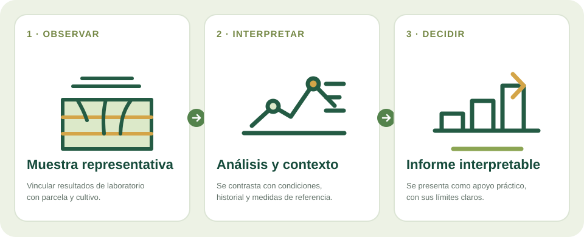

Cómo funciona
Se define una pregunta, se muestrea siguiendo un protocolo y se analiza en laboratorio. Después se organiza el informe para que la persona entienda qué parámetros se midieron y cuáles conviene consultar con un técnico.
Un análisis del suelo tiene más valor cuando la muestra se toma bien y los resultados se explican en relación con una parcela y un cultivo.
Diseño de servicio y colaboración con laboratoriosCómo puede convertirse una señal en información útil

Una muestra poco representativa o una tabla de resultados sin contexto puede llevar a comparar datos que no describen bien la finca.
Se define una pregunta, se muestrea siguiendo un protocolo y se analiza en laboratorio. Después se organiza el informe para que la persona entienda qué parámetros se midieron y cuáles conviene consultar con un técnico.
Facilitar una línea de base para comparar parcelas, preparar una consulta agronómica o planificar un seguimiento. TecRural puede centrarse inicialmente en coordinación, toma de datos y explicación sencilla, con análisis realizado por un laboratorio colaborador.
Servicio posible por muestra o campaña, coordinado con un laboratorio acreditado o especializado. La propuesta comercial debe indicar claramente quién realiza el análisis y qué incluye la interpretación.
No es prudente recomendar fertilización solo a partir de un resultado aislado. La interpretación depende del cultivo, el método, la profundidad, el agua de riego y el historial de manejo. El laboratorio debe indicar sus métodos y límites.
Visita la app agroclimática o vuelve a las líneas de investigación para conocer el resto de áreas.
La información de esta página describe una línea de investigación o desarrollo; no supone que exista un producto validado para todos los cultivos. Toda orientación técnica se contrasta con datos de campo y asesoramiento profesional cuando procede.